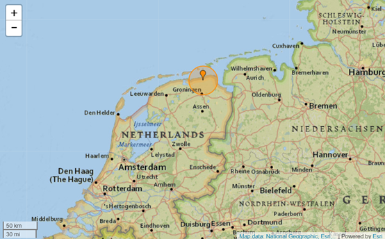

"It was horrible!" cried a local, "I was just doing groceries at Albert Heijn, then I felt the ground started to shake, I threw away my groceries
in the bucket, then ran out of the store immediately, so did everyone, after a few minutes, the building start to collapse! I'm glad that I ran out the
building, life is way more important than money. And I'm glad that nobody in the shop was injured."

Cause of earthquake is most likely Natural gas extraction
According to geologist in Leiden University, the cause of recent earthquakes are most likely the constant natural gas extraction in Groningen. “Natural gas has been one of the cornerstones for Dutch economy for more than half a century. There is no other product from which the Nederlands has earned as much as from natural gas. But it was known early on that the extraction of gas would cause subsidence in Groningen and later on the first earthquakes caused by gas extraction occurred the area.”
- Reinforcements of safety interests during decision-making on activities deep-underground.
- Apply the guiding principle that complex and uncertain risks are inherent in these activities and communicate these information to citizens.
- Ensure that other ministries are involved in decision-making on the exploration and exploitation of mineral resources
- Ensure that consideration is structurally and recognizably given to a citizen perspective in the decision-making process by allocating a role to the provinces and the local authorities
- Reinforce the duty of mining companies to conduct research. Ensure a structural and long-term research program is put in place in which integral and independent scientific and applied research is conducted into this issue.
Source:
https://earthquaketrack.com/quakes/2019-05-22-03-48-59-utc-3-2-10
https://www.rug.nl/feb/news/2018/180605-gas-production-and-earthquakes.pdf